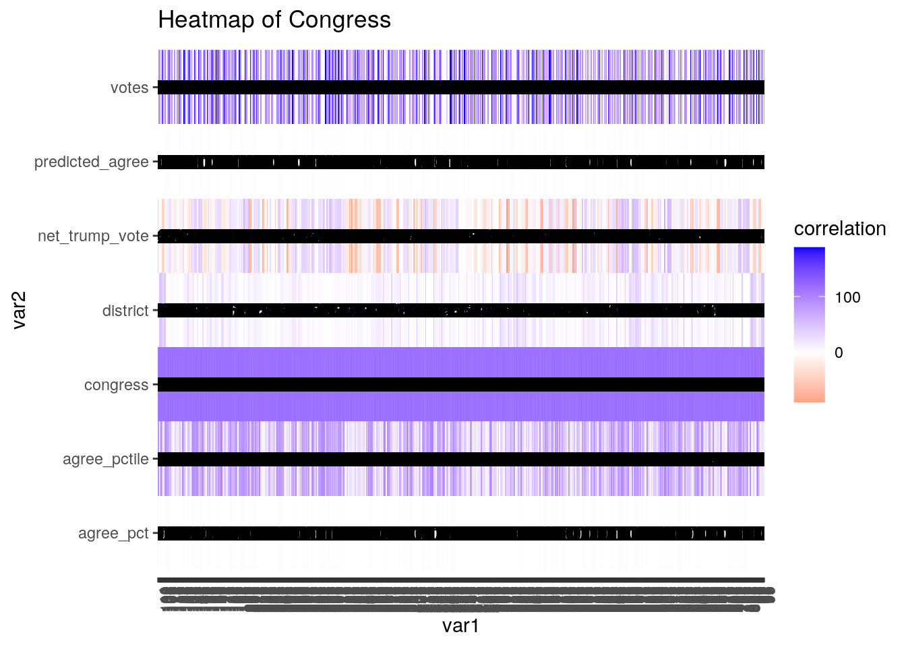
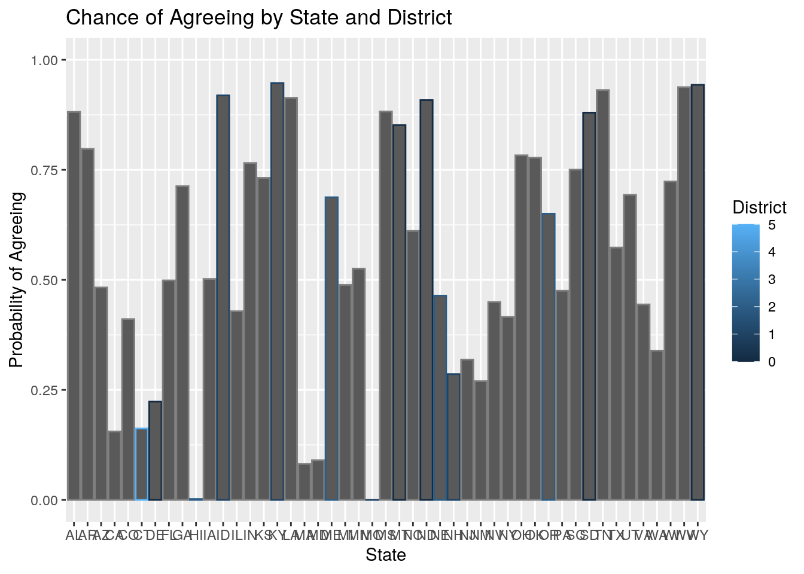
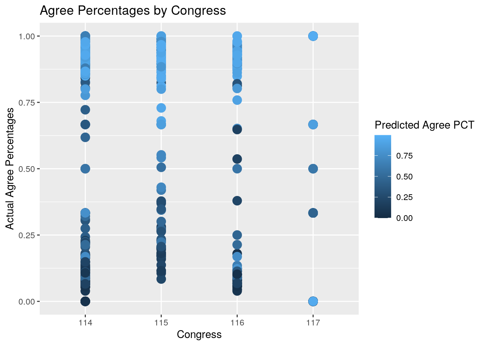
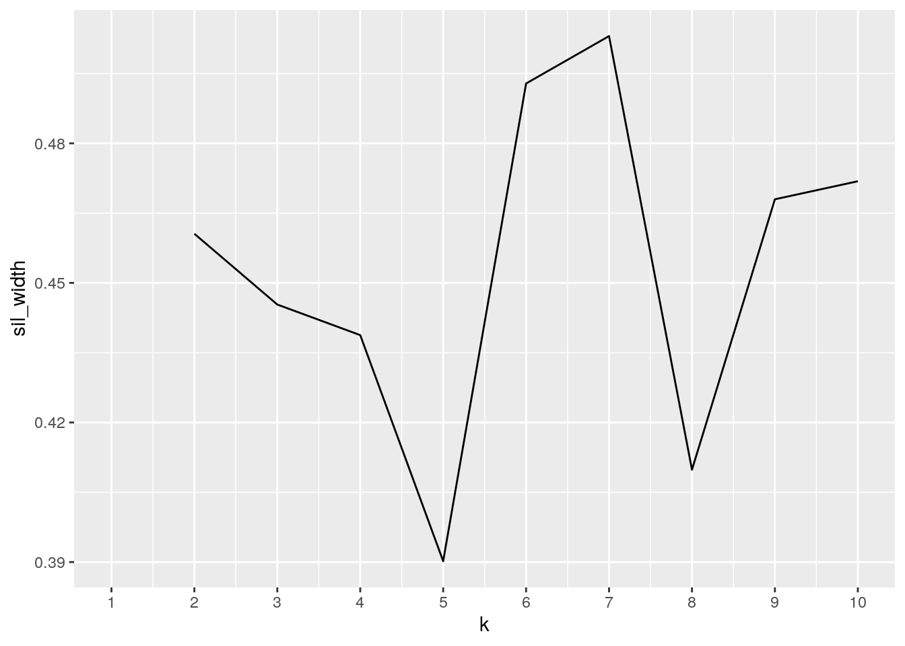
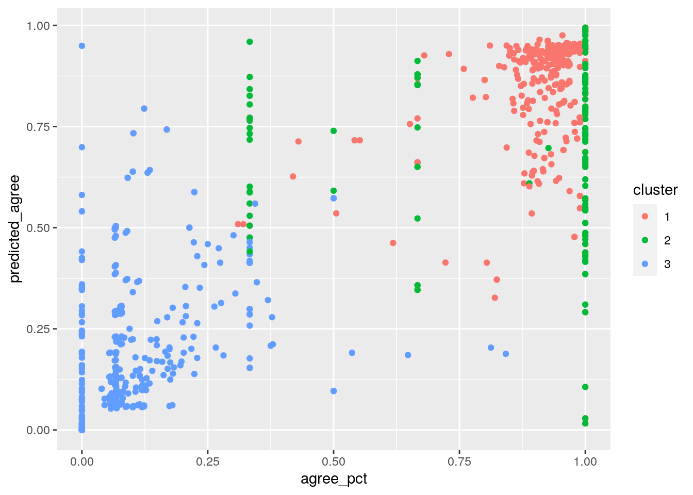

Introduction: I found my datasets from https://github.com/fivethirtyeight/data> I picked one dataset that had the information about each member of congress from 1947 to 2014, including what congress they served, when they started, which house they were in, and more. My other dataset had information about congressmen during Trump’s presidency including congress, chamber, and statistics about how certain members agreed or disagreed with Trump’s policies. These two datasets were interesting to me because I wanted to see if incumbent members of congress, Republican or Democrat, had a higher chance of agree or disagreeing with Trump’s policies.
library(tidyverse)
getwd()## [1] "/stor/home/tjz283/website/content/project"ct <- read_csv("congress-terms.csv")
ctsa <- read_csv("congress-trump-score-averages.csv")
ct %>% glimpse()## Rows: 18,635
## Columns: 13
## $ congress <dbl> 80, 80, 80, 80, 80, 80, 80, 80, 80, 80, 80, 80, 80, 80, 80…
## $ chamber <chr> "house", "house", "house", "house", "house", "house", "hou…
## $ bioguide <chr> "M000112", "D000448", "S000001", "E000023", "L000296", "G0…
## $ firstname <chr> "Joseph", "Robert", "Adolph", "Charles", "William", "James…
## $ middlename <chr> "Jefferson", "Lee", "Joachim", "Aubrey", NA, "A.", "Joseph…
## $ lastname <chr> "Mansfield", "Doughton", "Sabath", "Eaton", "Lewis", "Gall…
## $ suffix <chr> NA, NA, NA, NA, NA, NA, NA, NA, NA, NA, NA, NA, NA, NA, NA…
## $ birthday <date> 1861-02-09, 1863-11-07, 1866-04-04, 1868-03-29, 1868-09-2…
## $ state <chr> "TX", "NC", "IL", "NJ", "KY", "PA", "CA", "NY", "WI", "MA"…
## $ party <chr> "D", "D", "D", "R", "R", "R", "R", "D", "R", "R", "D", "R"…
## $ incumbent <chr> "Yes", "Yes", "Yes", "Yes", "No", "No", "Yes", "Yes", "Yes…
## $ termstart <date> 1947-01-03, 1947-01-03, 1947-01-03, 1947-01-03, 1947-01-0…
## $ age <dbl> 85.9, 83.2, 80.7, 78.8, 78.3, 78.0, 77.9, 76.8, 76.0, 75.8…ctsa %>% glimpse()## Rows: 2,343
## Columns: 11
## $ congress <dbl> 0, 115, 116, 117, 0, 117, 0, 115, 116, 0, 115, 116, 1…
## $ chamber <chr> "house", "house", "house", "house", "house", "house",…
## $ bioguide <chr> "A000055", "A000055", "A000055", "A000055", "A000148"…
## $ last_name <chr> "Aderholt", "Aderholt", "Aderholt", "Aderholt", "Auch…
## $ state <chr> "AL", "AL", "AL", "AL", "MA", "MA", "MI", "MI", "MI",…
## $ district <dbl> 4, 4, 4, 4, 4, 4, 3, 3, 3, 2, 2, 2, 2, 12, 12, 12, 12…
## $ party <chr> "Republican", "R", "R", "R", "Democrat", "D", "Libert…
## $ votes <dbl> 182, 95, 84, 3, 3, 3, 180, 96, 2, 182, 94, 85, 3, 183…
## $ agree_pct <dbl> 0.97252747, 0.96842105, 0.97619048, 1.00000000, 0.000…
## $ predicted_agree <dbl> 0.94612090, 0.94634916, 0.94419563, 0.99280009, 0.007…
## $ net_trump_vote <dbl> 63.0, 63.0, 63.0, 63.0, -24.2, -24.2, 9.4, 9.4, 9.4, …cttotal <- anti_join(ctsa, ct, by = "bioguide")For the ct data set, there were a total of 18,635 observations. For the ctsa data set, there were a total of 2,343 observations. I chose an anti-join because I wanted to analyze how long a congressperson, Democrat or Republican, was in office for and whether that affected their chances of agreeing with Donald Trump’s policies or not. However, I did not need all of the observations from the ct dataset because some of the members of congress were not serving during Trump’s presidency. After joining, I was left with 893 observations, meaning 17,742 observations were dropped. This is due to the fact that not every congressperson serving from 1947 (or any) to 2014 was still in congress from 2016-2020. Some potential issues with this could be that the averages for agree_pct and predicted_agree may be biased now.
cttotal <- cttotal %>% mutate(party = str_replace(party, "\\bD\\b",
"Democrat"))
cttotal <- cttotal %>% mutate(party = str_replace(party, "\\bR\\b",
"Republican"))
cttotal <- cttotal %>% mutate(party = str_replace(party, "\\bL\\b",
"Libertarian"))
cttotal <- cttotal %>% mutate(congress = str_replace(congress,
"\\b0\\b", "114"))
cttotal <- cttotal %>% mutate(agree_pctile = ntile(agree_pct,
100))
cttotal <- cttotal %>% filter(chamber == "house")
cttotal <- cttotal %>% group_by(party) %>% filter(n() > 1)
cttotal <- cttotal %>% arrange(last_name) %>% arrange(state)
cttotal <- cttotal %>% select(last_name, chamber, everything()) %>%
select(-bioguide)
cttotal %>% group_by(party, agree_pct) %>% summarize(count = n()) %>%
summarize(n_distinct(count)) %>% table()## n_distinct(count)
## party 9 12
## Democrat 0 1
## Republican 1 0mean(as.numeric(cttotal$votes))## [1] 67.43317mean(as.numeric(cttotal$agree_pct))## [1] 0.5269697mean(as.numeric(cttotal$predicted_agree))## [1] 0.5165393mean(as.numeric(cttotal$net_trump_vote))## [1] 2.520402sd(as.numeric(cttotal$votes))## [1] 56.83063sd(as.numeric(cttotal$agree_pct))## [1] 0.4208285sd(as.numeric(cttotal$predicted_agree))## [1] 0.348002sd(as.numeric(cttotal$net_trump_vote))## [1] 30.33701var(as.numeric(cttotal$votes))## [1] 3229.72var(as.numeric(cttotal$agree_pct))## [1] 0.1770966var(as.numeric(cttotal$predicted_agree))## [1] 0.1211054var(as.numeric(cttotal$net_trump_vote))## [1] 920.334quantile(as.numeric(cttotal$votes))## 0% 25% 50% 75% 100%
## 1 3 88 93 188quantile(as.numeric(cttotal$agree_pct))## 0% 25% 50% 75% 100%
## 0.00000000 0.06818182 0.66666667 0.94505494 1.00000000quantile(as.numeric(cttotal$predicted_agree))## 0% 25% 50% 75% 100%
## 0.0000000 0.1535017 0.5490590 0.8731425 0.9943886quantile(as.numeric(cttotal$net_trump_vote))## 0% 25% 50% 75% 100%
## -88.900 -12.675 6.800 24.125 63.000min(as.numeric(cttotal$votes))## [1] 1min(as.numeric(cttotal$agree_pct))## [1] 0min(as.numeric(cttotal$predicted_agree))## [1] 0min(as.numeric(cttotal$net_trump_vote))## [1] -88.9max(as.numeric(cttotal$votes))## [1] 188max(as.numeric(cttotal$agree_pct))## [1] 1max(as.numeric(cttotal$predicted_agree))## [1] 0.9943886max(as.numeric(cttotal$net_trump_vote))## [1] 63n_distinct(as.numeric(cttotal$votes))## [1] 68n_distinct(as.numeric(cttotal$agree_pct))## [1] 285n_distinct(as.numeric(cttotal$predicted_agree))## [1] 676n_distinct(as.numeric(cttotal$net_trump_vote))## [1] 206cttotal %>% group_by(party) %>% summarize(quantile_votes = quantile(votes,
na.rm = T), min_votes = min(votes, na.rm = T), max_votes = max(votes,
na.rm = T), n_distinct_votes = n_distinct(votes, na.rm = T))## # A tibble: 10 x 5
## # Groups: party [2]
## party quantile_votes min_votes max_votes n_distinct_votes
## <chr> <dbl> <dbl> <dbl> <int>
## 1 Democrat 1 1 188 34
## 2 Democrat 3 1 188 34
## 3 Democrat 89 1 188 34
## 4 Democrat 92 1 188 34
## 5 Democrat 188 1 188 34
## 6 Republican 1 1 188 63
## 7 Republican 3 1 188 63
## 8 Republican 86 1 188 63
## 9 Republican 94 1 188 63
## 10 Republican 188 1 188 63cttotal %>% group_by(congress) %>% summarize(mean_agreepct = mean(agree_pct,
na.rm = T), sd_agreepct = sd(agree_pct, na.rm = T), var_agreepct = var(agree_pct,
na.rm = T))## # A tibble: 4 x 4
## congress mean_agreepct sd_agreepct var_agreepct
## <chr> <dbl> <dbl> <dbl>
## 1 114 0.557 0.411 0.169
## 2 115 0.713 0.320 0.102
## 3 116 0.483 0.418 0.175
## 4 117 0.423 0.448 0.201cttotal %>% group_by(state) %>% summarize(mean_pa = mean(predicted_agree,
na.rm = T), sd_pa = sd(predicted_agree, na.rm = T), quantile_pa = quantile(predicted_agree,
na.rm = T))## # A tibble: 235 x 4
## # Groups: state [47]
## state mean_pa sd_pa quantile_pa
## <chr> <dbl> <dbl> <dbl>
## 1 AL 0.882 0.0724 0.799
## 2 AL 0.882 0.0724 0.823
## 3 AL 0.882 0.0724 0.886
## 4 AL 0.882 0.0724 0.943
## 5 AL 0.882 0.0724 0.960
## 6 AR 0.798 0.172 0.450
## 7 AR 0.798 0.172 0.733
## 8 AR 0.798 0.172 0.853
## 9 AR 0.798 0.172 0.928
## 10 AR 0.798 0.172 0.949
## # … with 225 more rowsFor this section, I started by mutating certain observations in my data to make the names consistent (i.e. changing “D” to “Democrat”, “R” to “Republican” and so on and so forth). Next, I created a new variable using the mutate function called “agree_pctile” by tanking the quantile of “agree_pct”. I filtered down to the “house” because there weren’t enough observations in the senate to make analyzing it worthwhile. Then, I grouped by party, arranged by last_name and state, and selected out bioguide, and placed last_name and chamber towards the front of my data. I also grouped by party and agree_pct and generated a table from my data. Next, I found the summary statistics for my four numeric variables. I think the most interesting results came from when I grouped by “congress” and found that the percentage of house members agreeing with Trump rose in his second year as president for both Republicans and Democrats, but then fell down sharply for the rest of his presidency, even among other Republicans.
library(ggplot2)
cttotal2 <- as.data.frame(apply(cttotal, 2, as.numeric))
ctmat <- cttotal2 %>% mutate(across(1:6, as.character)) %>% select_if(is.numeric) %>%
cor(use = "pair")
tidyct <- cttotal2 %>% as.data.frame %>% rownames_to_column("var1") %>%
pivot_longer(-1, names_to = "var2", values_to = "correlation")
tidyct <- tidyct %>% na.omit()
tidyct %>% ggplot(aes(var1, var2, fill = correlation)) + geom_tile() +
scale_fill_gradient2(low = "red", mid = "white", high = "blue") +
geom_text(aes(label = round(correlation, )), color = "black",
size = 4) + theme(axis.text.x = element_text(angle = 90,
hjust = 1)) + ggtitle("Heatmap of Congress")
ggplot(cttotal, aes(x = state)) + geom_bar(aes(y = predicted_agree,
color = district), stat = "summary", fun = mean) + scale_y_continuous(lim = c(0,
1)) + xlab("State") + ylab("Probability of Agreeing") + ggtitle("Chance of Agreeing by State and District") +
scale_color_continuous(name = "District")
ggplot(data = cttotal, aes(x = congress, y = agree_pct)) + geom_point(size = 4,
aes(color = predicted_agree)) + xlab("Congress") + ylab("Actual Agree Percentages") +
ggtitle("Agree Percentages by Congress") + scale_color_continuous(name = "Predicted Agree PCT")
For my first plot dealing with states and predicted_agree, I found it interesting (but not necessarily surprising) that mostly rural states tended to have a higher chance of agreeing with Trump’s policies than states that have more urban areas. For my second plot, I plotted the 4 congresses that served while Trump was president and the agree_pct. I found that for the 1st 2 years, the predicted_agree statistic was a good indicator of the actual agree percentages. However, for the last two years, the results seemed to be all over the place.
cttotal <- cttotal %>% pivot_longer(cols = c("agree_pct", "predicted_agree"),
names_to = "Location", values_to = "Values")
cttotal <- cttotal %>% pivot_wider(names_from = "Location", values_from = "Values")Because my data was already tidy, I decided to untidy it with pivot_longer to split up the agree_pct and predicted_agree variables to “Location” and “Values”. From my newly created columns, I re-tidied them using pivot_wider to remake the variables I had untidied.
library(cluster)
cttotal %>% ungroup() %>% mutate(gmeanSL = mean(agree_pct), gmeanPW = mean(predicted_agree)) %>%
group_by(gmeanPW, gmeanSL, party) %>% summarize(meanSL = mean(agree_pct),
meanPW = mean(predicted_agree), WSS = sum((agree_pct - meanSL)^2 +
(predicted_agree - meanPW)^2), BSS = sum((meanSL - gmeanSL)^2 +
(meanPW - gmeanPW)^2)) %>% ungroup() %>% summarize(BSS = sum(BSS),
WSS = sum(WSS))## # A tibble: 1 x 2
## BSS WSS
## <dbl> <dbl>
## 1 180. 60.7cttotal_num <- cttotal2 %>% scale()
kmeans1 <- kmeans(cttotal2[!is.na(cttotal2)], 3)
kmeans1## K-means clustering with 3 clusters of sizes 3338, 1511, 807
##
## Cluster means:
## [,1]
## 1 0.5441259
## 2 108.6909332
## 3 40.9830827
##
## Clustering vector:
## [1] 2 2 2 2 2 2 2 2 2 2 2 2 2 2 2 2 2 2 2 2 2 2 2 2 2 2 2 2 2 2 2 2 2 2 2 2 2
## [38] 2 2 2 2 2 2 2 2 2 2 2 2 2 2 2 2 2 2 2 2 2 2 2 2 2 2 2 2 2 2 2 2 2 2 2 2 2
## [75] 2 2 2 2 2 2 2 2 2 2 2 2 2 2 2 2 2 2 2 2 2 2 2 2 2 2
## [ reached getOption("max.print") -- omitted 5556 entries ]
##
## Within cluster sum of squares by cluster:
## [1] 520178.4 758782.7 188982.5
## (between_SS / total_SS = 89.3 %)
##
## Available components:
##
## [1] "cluster" "centers" "totss" "withinss" "tot.withinss"
## [6] "betweenss" "size" "iter" "ifault"cttotal2 <- cttotal2 %>% select(-chamber, -last_name, -party,
-state)
library(cluster)
sil_width <- vector()
for (i in 2:10) {
kms <- kmeans(cttotal2, centers = i)
sil <- silhouette(kms$cluster, dist(cttotal2))
sil_width[i] <- mean(sil[, 3])
}
ggplot() + geom_line(aes(x = 1:10, y = sil_width)) + scale_x_continuous(name = "k",
breaks = 1:10)
pam2 <- cttotal2 %>% scale %>% pam(3)
pam2## Medoids:
## ID congress district votes agree_pct predicted_agree
## [1,] 790 -0.3719181 -0.38126451 0.5026661 0.9755287 1.1329547
## [2,] 746 1.2792348 -0.38126451 -1.1337754 1.1240453 0.6195251
## [3,] 181 0.4536583 -0.08824448 0.3618970 -1.0902017 -1.1931946
## net_trump_vote agree_pctile
## [1,] 0.4739953 0.7526236
## [2,] 0.7344033 1.3708410
## [3,] -0.5083033 -0.8616108
## Clustering vector:
## [1] 1 2 1 2 1 1 1 2 1 1 1 3 1 1 1 2 1 1 1 2 3 3 3 3 1 1 1 2 1 1 1 3 3 3 3 3 3
## [38] 3 3 3 3 3 3 3 3 3 3 3 3 3 3 3 3 3 3 3 3 3 3 3 3 3 2 3 3 3 3 3 3 3 3 3 3 3
## [75] 3 3 3 3 3 3 1 1 3 3 3 3 3 3 3 1 2 3 3 3 3 3 3 3 3 3
## [ reached getOption("max.print") -- omitted 708 entries ]
## Objective function:
## build swap
## 1.870715 1.760012
##
## Available components:
## [1] "medoids" "id.med" "clustering" "objective" "isolation"
## [6] "clusinfo" "silinfo" "diss" "call" "data"round(sum(diag(as.matrix(ctmat[, 1:5])))/sum(ctmat[, 1:5]), 4)## [1] 0.3342pam2$silinfo$avg.width## [1] 0.3118915cttotal2 %>% slice(pam2$id.med)## congress district votes agree_pct predicted_agree net_trump_vote
## 1 115 6 96 0.93750000 0.9108098 16.9
## 2 117 6 3 1.00000000 0.7321353 24.8
## 3 116 9 88 0.06818182 0.1013052 -12.9
## agree_pctile
## 1 72
## 2 90
## 3 25pamclust <- cttotal2 %>% mutate(cluster = as.factor(pam2$clustering))
pamclust %>% ggplot(aes(agree_pct, predicted_agree, color = cluster)) +
geom_point()
TO start, I used the silhouette width to determine the best number of clusters to use and I decided on 3 clusters because they were sufficient to capture enough of the actual data. From there, I determined the average width of the silhouettes to be about 0.312. This means there was not a strong correlation among the clusters or the factors affecting whether or not a congressperson would agree or disagree with Trump’s policies. This can clearly be seen by the way the clusters aren’t very well defined in the data. From my visualization, there doesn’t appear to be a clear determinant for agreeing with Trump other than party status. However, this relationship isn’t ver strong and would require more data.